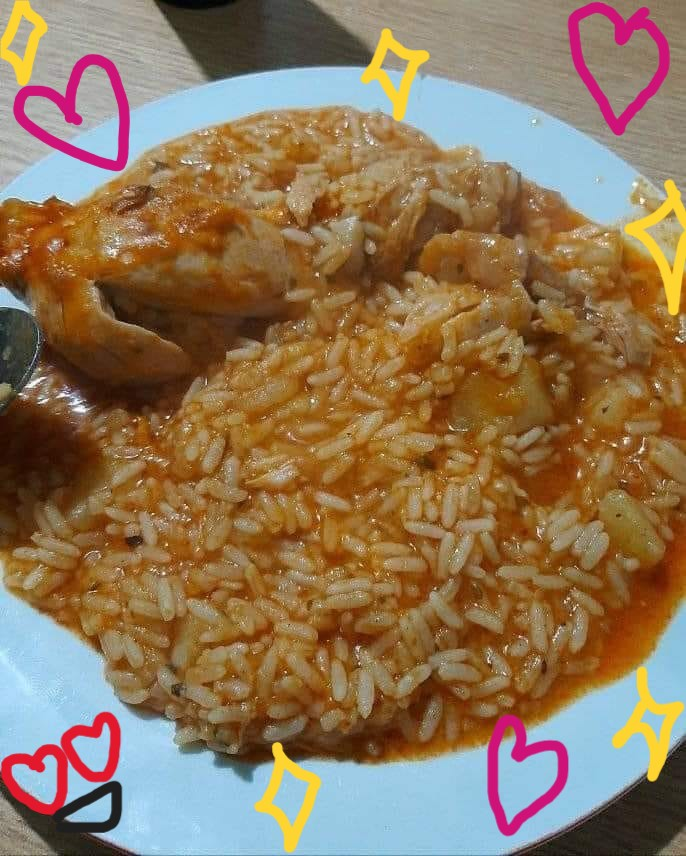

queres aprender a hacer alto guiso? llegaste al lugar indicado amor
si pensas q yo tengo una receta estas muy equivocado jaja. pero por suerte existe paulina cocina que tiene una flor de receta y como soy una persona generosa y solidaria, te lo voy a dejar linkeado acá abajo:
el guiso de Paulina Cocina